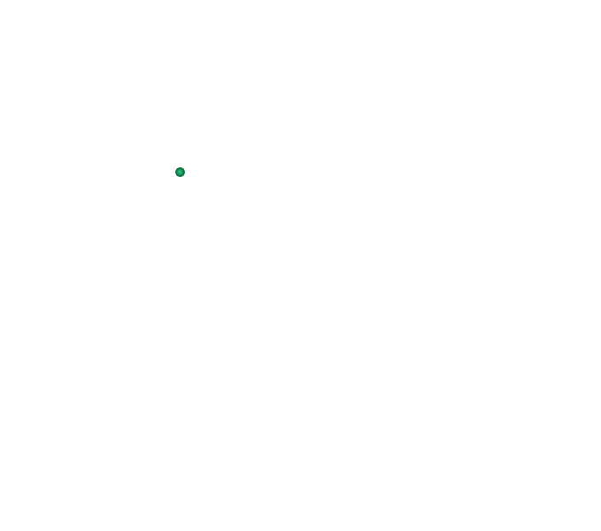
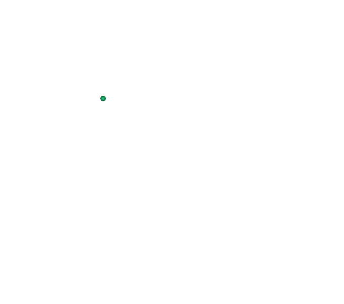

Кастория


 



Καστοριά
Γενικές πληροφορίες:
- Χώρα: Ελλάδα
- Έκταση: 57 τ.χλμ.
- Πληθυσμός: 20.147 (2011)
- Περιφέρεια: Δυτική Μακεδονία
Κάντε το γύρο της λίμνηςΟ καλύτερος τρόπος για να αποκτήσετε μια «σφαιρική» εικόνα της πόλης είναι κάνοντας το μικρό γύρο της λίμνης, ξεκινώντας από τη νότια παραλία και καταλήγοντας στη βόρεια. Χαλάρωση και ηρεμία είναι τα πρώτα συναισθήματα που σας κατακλύζουν, καθώς περιδιαβαίνετε το στενό παραλίμνιο δρόμο. Πυκνές οξιές και θεόρατα πλατάνια οριοθετούν τη διαδρομή, δημιουργώντας ένα σχεδόν απόκοσμο σκηνικό. Πυκνά παρόχθια δάση προστατεύουν στοργικά τους φτερωτούς τους ενοίκους. Η Ορεστιάδα αγκαλιάζει μια σημαντική ορνιθοπανίδα, με περισσότερα από 200 είδη, πολλά από τα οποία είναι σπάνια και επαπειλούμενα. Ντόπιοι ψαράδες στα καστοριανά «καράβια» τους, τις πλάβες, συναγωνίζονται σε μαεστρία τα υδρόβια πουλιά με έπαθλο κάθε λογής λιμνόψαρα. Στο σεργιάνι σας επιβάλλεται μια στάση στο Σπήλαιο του Δράκου με τις επτά υπόγειες λίμνες και τις δέκα αίθουσες που φέρουν εντυπωσιακό σταλακτιτικό διάκοσμο. Αν θέλετε να θαυμάσετε την πόλη από ψηλά, ακολουθήστε την καταπράσινη διαδρομή που οδηγεί στο εκκλησάκι του Προφήτη Ηλία ή συνεχίστε ακόμη ψηλότερα μέχρι το ύψωμα του Αγίου Αθανασίου.
Περιηγηθείτε στις αρχοντο-γειτονιέςΣε κοντινή απόσταση από τη λίμνη, η παλιά συνοικία Ντολτσό, από τις πιο γραφικές γειτονιές της πόλης, θα σας μαγέψει με τα μεγαλοπρεπή αρχοντικά του 17ου και 18ου αι. τα οποία στέκουν αδιάψευστοι μάρτυρες μιας οικονομίας που «άνθισε» χάρη στην κατεργασία και το εμπόριο της γούνας. Πολλά από αυτά έχουν μετατραπεί σε μουσεία, όπως το αρχοντικό Νεράτζη Αϊβάζη που στεγάζει το Λαογραφικό Μουσείο, το αρχοντικό Εμμανουήλ που στεγάζει το Μουσείο Ενδυματολογίας κ.ά. Ολοκληρώνοντας τον περίπατό σας, κοντά στη βόρεια παραλία θα συναντήσετε τη δεύτερη παλιά γειτονιά της πόλης, το Απόζαρι με την αριστοκρατική ατμόσφαιρα, τις περίτεχνες βυζαντινές εκκλησιές και τα όμορφα αρχοντικά, χαρακτηριστικά δείγματα μακεδονίτικης αρχιτεκτονικής.
Ανακαλύψτε Βυζαντινούς θησαυρούςΙδιαίτερο αξιοθέατο της Καστοριάς αποτελούν οι πάμπολλες, πάνω από 60, βυζαντινές και μεταβυζαντινές εκκλησιές που χρονολογούνται από τον 9ο έως τον 19ο αι. Όλες είναι τύπου βασιλικής, εκτός από την Παναγία Κουμπελίδικη, η οποία πήρε το όνομά της από το χαρακτηριστικό της τρούλο (κουμπέ). Από τις πιο εντυπωσιακές, θεμελιωμένη στις όχθες της λίμνης, είναι η Μονή Παναγίας Μαυριώτισσας (1802) που προκαλεί το θαυμασμό με τις τοιχογραφίες του καθολικού, αλλά και τις εξωτερικές, που απεικονίζουν αυτοκράτορες του Βυζαντίου. Ξεχωρίζουν επίσης οι ναοί των Ταξιαρχών και των Αγίων Αναργύρων (από τα αρχαιότερα μνημεία της πόλης) στο Ντολτσό, του Αγίου Στεφάνου, του Αγίου Παντελεήμονα και των Εσοδίων της Θεοτόκου στο Απόζαρι. Μην παραλείψετε μια επίσκεψη στο Μουσείο Βυζαντινής Τέχνης (πλατεία Δεξαμενής), όπου εκτίθενται αντικείμενα της Βυζαντινής περιόδου: πάνω από 700, άριστα συντηρημένες, φορητές εικόνες από τους ναούς της πόλης, γλυπτά, τοιχογραφίες και αγιογραφίες.
Μην παραλείψετε να:Αξίζει ακόμα να επισκεφθείτε:
- Χαρείτε τις ομορφιές της λίμνης και μια πανοραμική εικόνα της πόλης «εν πλω», στο τουριστικό σκάφος που πραγματοποιεί τον περίπλου της χερσονήσου.
- Επισκεφθείτε το πρότυπο ενυδρείο, το μεγαλύτερο γλυκού νερού των Βαλκανίων. Εδώ φιλοξενούνται κοινές, αλλά και επαπειλούμενες ιχθυοποικιλίες (όπως ο οξύρρυγχος) λιμναίων και ποτάμιων νερών.
- Θαυμάστε τη φημισμένη καστοριανή τέχνη της γουναρικής στα πολλά εργαστήρια – εκθετήρια και στο Κέντρο Γούνας Ε.ΔΗ.ΚΑ.
Πως θα φτάσετε:
- Το Δισπηλιό (7 χλμ. ΝΑ της Καστοριάς). Στη θέση Νησί έχει ανασκαφεί πασσαλόκτιστος προϊστορικός λιμναίος οικισμός που χρονολογείται από το 5.000 π.Χ. Δίπλα έχει διαμορφωθεί ένα εντυπωσιακό πάρκο με φυσική αναπαράσταση μέρους του οικισμού αυτού και πληροφορίες για τη ζωή των κατοίκων της περιοχής πριν από περίπου 7.000 χρόνια.
- Το παραδοσιακό χωριό Νεστόριο (28 χλμ. ΝΔ), όπου κάθε καλοκαίρι στις όχθες του Αλιάκμονα ποταμού διοργανώνεται το διάσημο River Party με τη συμμετοχή γνωστών καλλιτεχνών.
- Το χωριό Νόστιμο (17 χλμ. ΝΔ), γνωστό για το απολιθωμένο δάσος του, ηλικίας 20 εκατομμυρίων χρόνων.
- Τα Κορέστεια χωριά στα βόρεια του νομού. Αν και σήμερα τα περισσότερα από αυτά έχουν ερημώσει, ξεχωρίζουν για τη μοναδική ατμόσφαιρα και την ιδιαίτερη κατασκευή των σπιτιών τους από πλίνθους, τα ονομαζόμενα «σπίτια της λάσπης».
- Το χιονοδρομικό κέντρο Βιτσίου, κοντά στο γραφικό χωριό Πολυκέρασο (22 χλμ. ΒΑ) για σκι και snowboard.
Η Καστοριά απέχει 575 χλμ. από την Αθήνα (μέσω Κοζάνης) και 219 χλμ. από τη Θεσσαλονίκη. Μπορείτε να φτάσετε και αεροπορικώς μέσω Άργους Ορεστικού (10 χλμ. από την Καστοριά).
Кастория
Основная информация:- Страна: Греция
- Площадь: 19,307 кв.км.
- Население: 315 196 (2011)
- Регион: Западная Македония
Сделайте круг по озеру
Лучший способ получить "сферическое" изображение города - это сделать небольшой круг вокруг озера, начиная с Южного пляжа и заканчивая Северным. Расслабление и спокойствие - это первые эмоции, которые переполняют вас, когда вы идёте по узкой дороге у озера. Густые буки и огромные платаны ограничивают маршрут, создавая почти жуткую обстановку. Густые прибрежные леса ласково защищают своих крылатых обитателей. Орестиада охватывает важную орнитофауну, насчитывающую более 200 видов, многие из которых являются редкими и находятся под угрозой исчезновения. Местные рыбаки на своих касторианских "лодках", плавах, соревнуются в мастерстве с водными птицами с призовым фондом всех видов озёрной рыбы. В Сергиани вам необходимо остановиться в пещере Дракона с ее семью подземными озерами и десятью залами, украшенными впечатляющими сталактитами. Если вы хотите полюбоваться городом сверху, следуйте по зеленой тропинке, которая ведет к часовне Профитиса Илиаса, или поднимитесь выше на холм Святого Афанасия.
Обзор особняков-кварталовНедалеко от озера, старый район Дольчо, один из самых живописных районов города, очарует вас величественными особняками 17-18 веков, которые являются бесспорными свидетелями экономики, которая «процветала» благодаря обработке меха и торговле им. Многие из них были превращены в музеи, например, особняк Нераци Айвазис, в котором находится Фольклорный музей, особняк Эммануэль, в котором находится Музей дизайна костюмов и т.д. Завершая прогулку, недалеко от северного пляжа вы найдете второй старый район города, Апозари с его аристократической атмосферой, богато украшенными византийскими церквями и красивыми особняками, типичными образцами македонской архитектуры.
Откройте для себя византийские сокровищаОсобой достопримечательностью Кастории являются многочисленные, более 60, византийские и поствизантийские церкви, построенные с 9 по 19 век. Все они относятся к типу базилика, за исключением Панагии Кумпелидики, которая названа в честь своего характерного купола (κουμπέ). Одним из самых впечатляющих, основанных на берегах озера, является монастырь Панагия Мавриотисса (1802), который вызывает восхищение фресками кафоликона, а также внешним видом, изображающим императоров Византии. Также выделяются церкви Таксиархов и Агии Анаргирои (один из древнейших памятников города) в Дольцосе, Агиос Стефанос, Агиос Пантелеймон и Эзоды Девы Марии в Апозари. Не пропустите посещение Музея Византийского искусства (площадь Танков), где выставлены предметы византийского периода: более 700 прекрасно сохранившихся переносных икон из городских храмов, скульптур, фресок и агиографий.
Не пропустите, чтобы:- Насладиться красотами озера и панорамным видом на город "εν πλω" (морской термин - "во время плавания") на туристическом катере, который совершает кругосветное плавание по полуострову.
- Посетите образцовый аквариум, самый большой пресноводный аквариум на Балканах. Здесь обитают распространенные и находящиеся под угрозой исчезновения виды рыб (например, осетровые) озерных и речных вод.
- Полюбуйтесь знаменитым касторским искусством меха в многочисленных мастерских-выставках и в меховом центре ΕΔηΚα (Εκθετήριο–Δημοπρατήριο Καστοριάς - Аукционный Дом Кастории).
- Диспилио (7 км к юго-востоку от Кастории). В Нисси было открыто доисторическое озерное поселение, построенное на сваях, датируемое 5000 годом до нашей эры. Рядом с ним образован впечатляющий парк с естественным изображением части этого поселения и информацией о жизни жителей этого района около 7000 лет назад.
- Традиционную деревню Несторио (28 км к юго-западу), где каждое лето на берегу реки Алиакмонас проводится знаменитая River Party с участием известных артистов.
- Деревню Ностимо (17 км к юго-западу), известная своими окаменевшими лесами, возрастом 20 миллионов лет.
- Деревни Корести на севере префектуры. Хотя сегодня большинство из них заброшены, они выделяются неповторимой атмосферой и особой постройкой своих домов из кирпича, так называемых «глиняных домов».
- Горнолыжный центр Витси, недалеко от живописной деревни Поликерасо (22 км к северо-востоку) для катания на лыжах и сноуборде.
Кастория находится в 575 км от Афин (через Козани) и в 219 км от Салоников. Вы также можете добраться по воздуху через Аргос Орестико (10 км от Кастории).